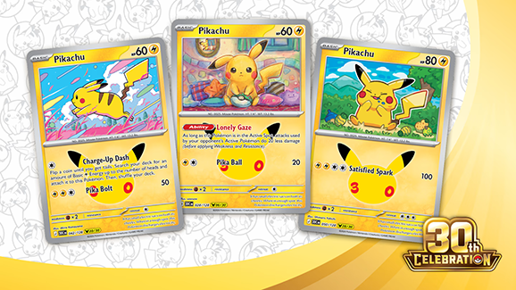
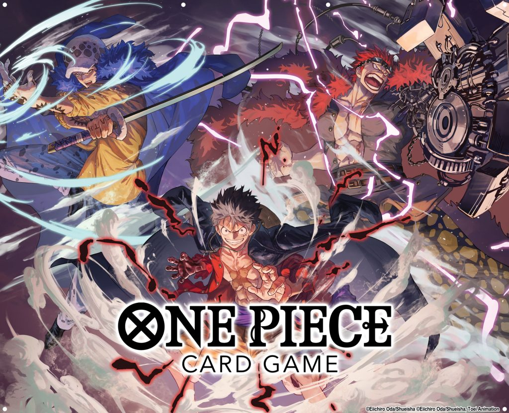
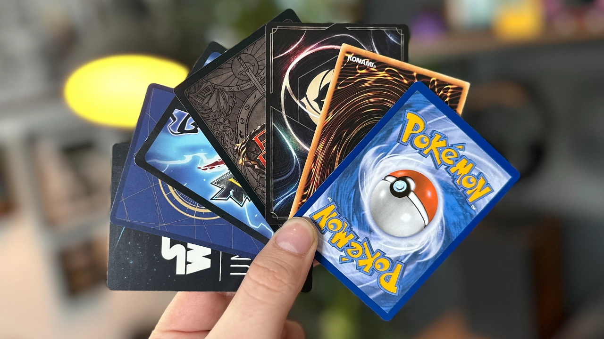

this page is to provide the audience about the card games and what players think about the community
There is more to just playing the card game. There are a couple other routes you can take when you're in this community. you can start creating a collection of certain card, trying to make a master collection, trading to other players to help you or the other player get the card that you two need, or meeting new people in the community and begin a friendship with them.
There are multiple card games to choose from, each with its own unique gameplay and strategies. Consider your interests and the complexity you're comfortable with when making your decision.
It's actually simple to find other players. you just need to find your Local Game Store (LGS for short.) From there, the employees can further explain about the card game you're interested in and even help you learn to play.
You can get cards by purchasing them from your local game store, online retailers, or through trading with other players. some stores may even have an allotment of cards considered "Bulk" that anyone can just pick up and keep.

The Pokemon card game is a spin off to the video game of the same name. the objective when playing this TCG is to knockout your opponents Pokemon and claim your prize cards you set aside. claim all 6 cards and you win!
Magic The Gathering, or MTG for short, is the grandfather of all trading card games. first released in 1993, the card game has over 30,000 unique cards that they have printed. The objective is to dwindle your opponents life to 0, but there are multiple other options to score victory in this game!

One Piece is one of the more recent trading card games that has surged in popularity. Riding the hype from its manga and anime, this Card game brought fans from their show into the world of TCG's. this games objective is to set their leader's life to 0, but each leader will have a different number as their life and specific color to match.

there are many other TCG's that are being played that I couldn't include. But that doesn't mean that they're not good. You can always find the one that speaks to you, and find a good connection to other people. So why not try a Trading card game out? you just might learn that it might be your next step in life.